File: 000390.gt.txt (if the image is defective, simply delete all Arabic text and the line will be excluded)
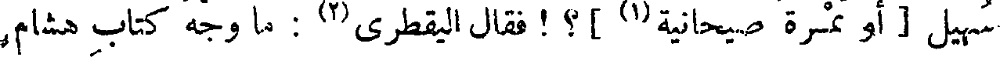
سهيل [ أو تمرة صيحانية(1) ] ؟ ! فقال اليقطري(2) : ما وجه كتاب هشام
File: 000391.gt.txt (if the image is defective, simply delete all Arabic text and the line will be excluded)
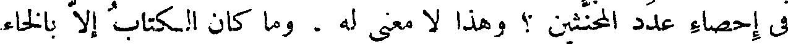
في إحصاء عدد المخنثين ؟ وهذا لا معنى له ، وما كان الكتاب إلا بالخاء
File: 000392.gt.txt (if the image is defective, simply delete all Arabic text and the line will be excluded)
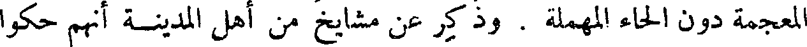
المعجمة دون الحاء المهملة . وذكر عن مشايخ من أهل المدينة أنهم حكوا
File: 000393.gt.txt (if the image is defective, simply delete all Arabic text and the line will be excluded)
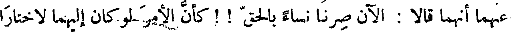
عنهما أنهما قالا : الآن صرنا نساء بالحق ! ! كأن الأمر لو كان إليهما لاختارا
File: 000394.gt.txt (if the image is defective, simply delete all Arabic text and the line will be excluded)
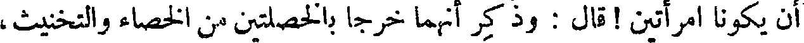
أن يكونا امرأتين ! قال : وذكر أنهما خرجا بالخصلتين من الخصاء والتخنيث،
File: 000395.gt.txt (if the image is defective, simply delete all Arabic text and the line will be excluded)
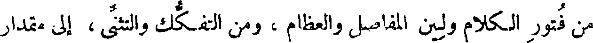
من فتور الكلام ولين المفاصل والعظام ، ومن التفكك والتثنى ، إلى مقدار
File: 000396.gt.txt (if the image is defective, simply delete all Arabic text and the line will be excluded)
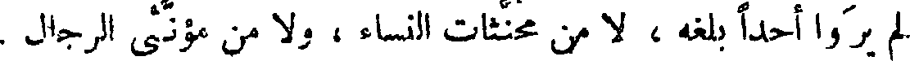
لم يروا أحدا بلغه ، لا من مخنثات النساء ، ولا من مؤنثى الرجال .
File: 000397.gt.txt (if the image is defective, simply delete all Arabic text and the line will be excluded)
( أبو همام السنوط )
File: 000398.gt.txt (if the image is defective, simply delete all Arabic text and the line will be excluded)
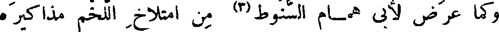
وكما عرض لأبي همام السنوط (3) من امتلاخ اللخم مذاكيره
File: 000399.gt.txt (if the image is defective, simply delete all Arabic text and the line will be excluded)
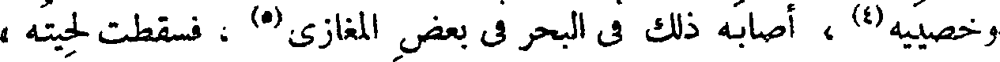
وخصييه(4) ، أصابه ذلك في البحر في بعض المغازي(5) ، فسقطت لحيته ،
File: 000400.gt.txt (if the image is defective, simply delete all Arabic text and the line will be excluded)
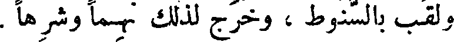
ولقب بالسنوط ، وخرج لذلك نهما وشرها .
File: 000401.gt.txt (if the image is defective, simply delete all Arabic text and the line will be excluded)
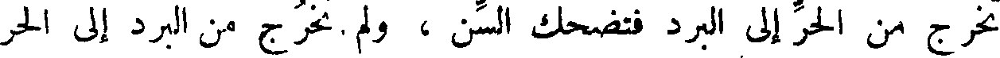
تخرج من الحر إلى البرد فتضحك السن ، ولم تخرج من البرد إلى الحر
File: 000402.gt.txt (if the image is defective, simply delete all Arabic text and the line will be excluded)
باب
File: 000403.gt.txt (if the image is defective, simply delete all Arabic text and the line will be excluded)
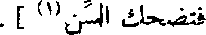
فتضحك السن(1) ] .
File: 000404.gt.txt (if the image is defective, simply delete all Arabic text and the line will be excluded)
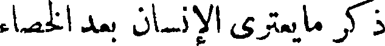
ذكر ما يعتري الإنسان بعد الخصاء
File: 000405.gt.txt (if the image is defective, simply delete all Arabic text and the line will be excluded)
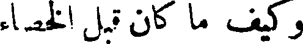
وكيف ما كان قبل الخصاء
File: 000406.gt.txt (if the image is defective, simply delete all Arabic text and the line will be excluded)
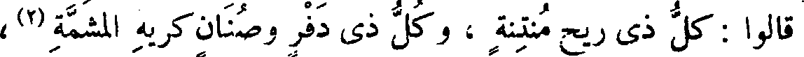
قالوا : كل ذي ريح منتنة ، وكل ذي دفر وصنان كريه المشمة(2) ،
File: 000407.gt.txt (if the image is defective, simply delete all Arabic text and the line will be excluded)
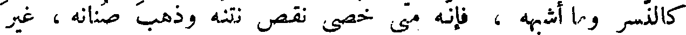
كالنسر وما أشبهه ، فإنه متى خصي نقص نتنه وذهب صنانه ، غير
File: 000408.gt.txt (if the image is defective, simply delete all Arabic text and the line will be excluded)
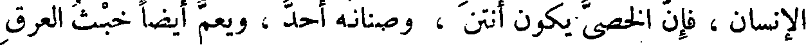
الإنسان، فإن الخصي يكون أنتن ، وصنانه أحد ، ويعم أيضا خبث العرق
File: 000409.gt.txt (if the image is defective, simply delete all Arabic text and the line will be excluded)
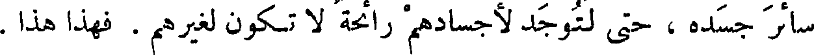
سائر جسده ، حتى لتوجد لأجسادهم رائحة لا تكون لغيرهم . فهذا هذا .
File: 000410.gt.txt (if the image is defective, simply delete all Arabic text and the line will be excluded)
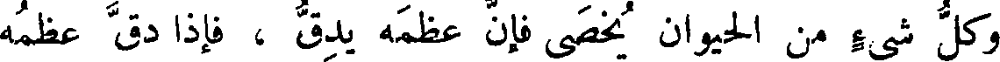
وكل شيء من الحيوان يخصى فإن عظمه يدق ، فإذا دق عظمه
File: 000411.gt.txt (if the image is defective, simply delete all Arabic text and the line will be excluded)
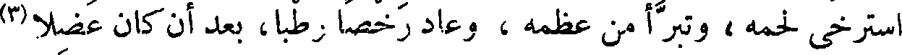
استرخى لحمه ، وتبرأ من عظمه ، وعاد رخصا رطبا، بعد أن كان عضلا(3)
File: 000412.gt.txt (if the image is defective, simply delete all Arabic text and the line will be excluded)
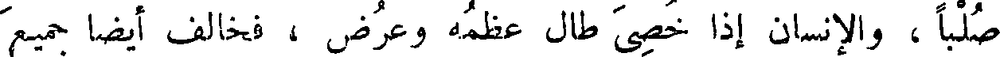
صلبا، والإنسان إذا خصى طال عظمه وعرض ، فخالف أيضا جميع
File: 000413.gt.txt (if the image is defective, simply delete all Arabic text and the line will be excluded)
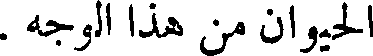
الحيوان من هذا الوجه .
File: 000414.gt.txt (if the image is defective, simply delete all Arabic text and the line will be excluded)
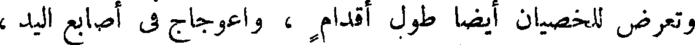
وتعرض للخصيان أيضا طول أقدام ، واعوجاج في أصابع اليد ،
File: 000415.gt.txt (if the image is defective, simply delete all Arabic text and the line will be excluded)
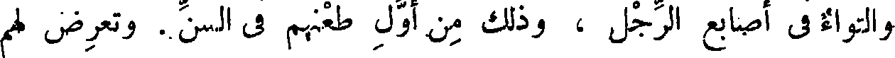
والتواء في أصابع الرجل ، وذلك من أول طعنهم في السن . وتعرض لهم
File: 000416.gt.txt (if the image is defective, simply delete all Arabic text and the line will be excluded)
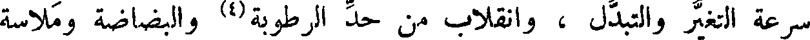
سرعة التغير والتبدل ، وانقلاب من حد الرطوبة(4) والبضاضة وملاسة
File: 000417.gt.txt (if the image is defective, simply delete all Arabic text and the line will be excluded)
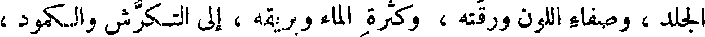
الجلد ، وصفاء اللون ورقته ، وكثرة الماء و بريقه ، إلى التكرش والكمود ،
File: 000418.gt.txt (if the image is defective, simply delete all Arabic text and the line will be excluded)
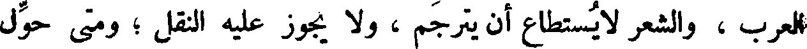
العرب ، والشعر لا يستطاع أن يترجم ، ولا يجوز عليه النقل ؛ ومتى حول
File: 000419.gt.txt (if the image is defective, simply delete all Arabic text and the line will be excluded)
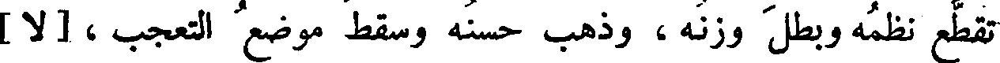
تقطع نظمه وبطل وزنه ، وذهب حسنه وسقط موضع التعجب ، [لا]
To Save: `Ctrl+s`, make sure to choose `Webpage, complete`!